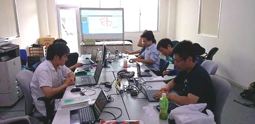

和歌山Ruby(Wakayama.rb)は、和歌山でRuby、Ruby on Rails、mrubyなどをテーマにした勉強会を行うコミュニティです。Ruby、Ruby on Rails、mrubyに興味があるけれど「大阪まではちょっと遠くてなかなか出て行けないよ」という思いを持っている方が多いのではないでしょうか。「それじゃ和歌山でRubyの勉強会を始めましょう」というノリで作りました。
メンバーにはRubyが初めてという方もいます。一緒に楽しくRubyの勉強をしていきましょう。
和歌山Ruby(Wakayama.rb)は、和歌山でRuby、Ruby on Rails、mrubyなどをテーマにした勉強会を行うコミュニティです。Ruby、Ruby on Rails、mrubyに興味があるけれど「大阪まではちょっと遠くてなかなか出て行けないよ」という思いを持っている方が多いのではないでしょうか。「それじゃ和歌山でRubyの勉強会を始めましょう」というノリで作りました。
メンバーにはRubyが初めてという方もいます。一緒に楽しくRubyの勉強をしていきましょう。

月1回、主に和歌山市内で勉強会を行っています。参加される際は、ご自身のコンピュータや充電器の他、マルチタップなどをお持ちいただくとスムーズなこともあります。参加のお申し込みはDoorkeeperからお願いします。お問い合わせなどあるときにはDoorkeeperの主催者にお問い合わせからメールを出してください。
勉強会の開催情報などはWakayama.rbのFacebookグループからも知ることができます。また、Githubに公開しているプロジェクトがあります。

GR-CITRUSはmrubyを実装したRubyボードです。スクリプト言語Rubyを用いて開発が可能です。

WA-MIKANはGR-CITRUSに直結できるWiFiボードです。

和歌山大学システム工学部 鈴木新先生 提供（開発元：紀央電子）
GR-CITRUS及びWA-MIKANのユースケースです。Rubyで簡単にIoT機器への組み込みが可能になります。
GR-CITRUSとWA-MIKANのサンプルコードです。
その他のサンプルコード
#!mruby
Usb = Serial.new(0)
k = 1
8.times do |n|
led k
k = 1 - k
Usb.println "#{k.to_s}:Hello World! at #{System.getMrbPath}"
delay 500
end
led 0#!mruby
10.times do
led 0
delay 500
led 1
delay 500
end#!mruby
#Version 2.16
header=["User-Agent: gr-citrus", "Accept: application/json", "Content-type: application/json"]
body = '{ "name" : "tarosan" }'
WiFi.httpPost("192.168.1.52:3000", header, body)
#!mruby
#Version 2.16
for value in 1..50
WiFi.httpGet("192.168.1.58:3000/?query1=" + value.to_s + "&query2=" + (value * value).to_s)
delay 100
end
header=["User-Agent: curl"]
WiFi.httpGetSD("wether.htm","wttr.in/wakayama", header)